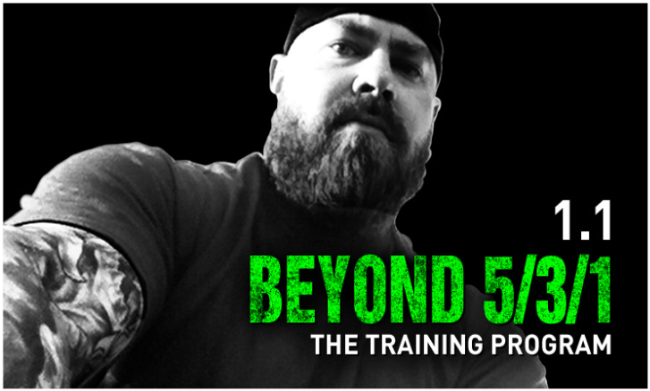

웬들러 531!
출처 유튜브 백승현
1.기본적으로 전3주+후3주+디로딩 1주로 구성 되있습니다.총 7주가 한사이클 입니다.
전3주가 기본이고 후3주는 전3주에서 트레이닝맥스를 올린 것만 제외하면 전3주와 같습니다.
2.전3주 끝나고 후3주 들어가기전에 TM을 벤치, 프레스는 2.5kg 데드, 스쿼트는 5kg 증량합니다.
※프레스의 경우는 3주마다 2.5kg를 올리기 힘들수 있습니다.
그러므로 추정1RM이 2.5kg 이상 오른경우에만 후3주가 끝나고 2.5kg를 올립니다.
3. 디로딩 1주가 끝나고 나서도 TM을 벤치, 프레스 2.5kg / 데드, 스쿼트는 5kg 증량합니다.
4. 웬들러 7주는 프로그램이 아니라 템플릿에 가깝습니다. 그래서 파워빌딩을 노리는 분들 (근비대 + 스트렝스)에게 적합하게 작성해봤습니다.
5.편의를 위해서 기본뼈대는 그대로 하되 일부분을 수정하였습니다. 디테일한 부분에서 원본과 조금 다를수 있습니다.
STARTS
